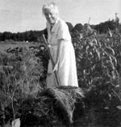

‘Mulch Queen’ Ruth Stout claimed to have smashed saloons with Carry Nation in Prohibition-era Kansas and worked au natural in her roadside Connecticut garden, but her labor-saving, soil-improving, permanent garden mulching technique is what earned herlasting fame. Stout was born in 1884 and lived to be 96; by the1950s, she was writing lively gardening books, including How to Have a Green Thumb Without an Aching Back and Gardening Without Work. Both are out of print, but Stout's technique remains consistent with the "no-till" gardening methods soil experts recommend today (see Building Fertile Soil). We thought you might enjoy meeting Stout through this excerpt from Gardening Without Work, which was reprinted most recently byThe Lyons Press. - Mother
My no-work gardening method is simply to keep a thick mulch of any vegetable matter that rots on both my vegetable and flower garden all year round. As it decays and enriches the soil, I add more. The labor-saving part of my system is that I never plow, spade, sow a cover crop, harrow, hoe, cultivate, weed, water or spray. I use just one fertilizer (cottonseed or soybean meal), and I don't go through that tortuous business of building a compost pile.
I beg everyone to start with a mulch 8 inches deep; otherwise, weeds may come through, and it would be a pity to be discouraged at the very start. But when I am asked how many bales (or tons) of hay are necessary to cover any given area, I can't answer from my own experience, for I gardened in this way for years before I had any idea of writing about it, and therefore didn't keep track of such details.
However, I now have some information on this from Dick Clemence, my A-Number-One adviser. He says, "I should think of 25 50-pound bales as about the minimum for 50 feet by 50 feet, or about a half-ton of loose hay. That should give a fair starting cover, but an equal quantity in reserve would be desirable." That is a better answer than the one I have been giving, which is: You need at least twice as much as you would think.
Spoiled or regular hay, straw, leaves, pine needles, sawdust, weeds, garbage - any vegetable matter that rots.
No, they just remain mulch longer, which cuts down on labor. Don't they mat down? If so, it doesn't matter because they are between the rows of growing things and not on top of them. Can one use leaves without hay? Yes, but a combination of the two is better, I think.
What is spoiled hay? It's hay that for some reason isn't good enough to feed livestock. It may have, for instance, become moldy - if it was moist when put in the haymow - but it is just as effective for mulching as good hay, and a great deal cheaper.
Shouldn't the hay be chopped? Well, I don't have mine chopped and I don't have a terrible time - and I'm 76 and no stronger than the average person.
Can you use grass clippings? Yes, but unless you have a huge lawn or have neighbors who will collect them for you, they don't go very far.
You plant exactly as you always have, in the Earth. You pull back the mulch and put the seeds in the ground and cover them just as you would if you had never heard of mulching.
If the mulch is thick enough, the weeds can't come through it.
One man in a group I addressed was determined not to let me get away with claiming that it was all right to throw a lot of hay full of grass seeds on one's garden, and the rest of the audience was with him. I was getting nowhere and was bordering on desperation, when, finally, I asked him:
"If you were going to make a lawn, would you plant the grass seed and then cover it with several inches of hay?" Put that way, he at last realized that a lot of hay on top of tiny seeds would keep them from germinating.
However, it's true that you can lay chunks of baled hay between the rows of vegetables in your garden and, in a wet season, have a hearty growth of weeds right on top of the hay. To kill unwanted weeds all you need do is turn over the chunk of hay. Now, this isn't much of a job but some ardent disciples of my system are capable of getting indignant with me (in a nice way, of course) because they are put to that bother. I have relieved them of all plowing, hoeing, cultivating, weeding, watering, spraying and making compost piles; how is it that I haven't thought of some way to avoid this turning over of those chunks of hay?
One can't, of course, but almost before one gets through spreading it, the mulch begins to settle and soon becomes a 2- or 3-inch compact mass rather than an 8-inch fluffy one. It will no doubt be walked on, and rain may come; in any case, it will settle. As a matter of fact you won't need 8 inches to start if you use solid chunks of baled hay.
I have nothing at all against it; in fact, I have a somewhat exaggerated respect for it. But I no longer need it; the ever-rotting mulch takes its place.
I sort of complained, in my first book, that no one ever wrote an ode to manure, and through the years since then at least a half-dozen people have sent me poems they composed about manure piles.
I have been asked over and over if such things as sawdust and oak leaves should be avoided, the idea being that they make the soil too acidic. I use sawdust, primarily around raspberries, with excellent results. We have no oak trees, therefore I can't answer that question from experience, but I certainly wouldn't hesitate to use them; then, if it turned out that they were making the soil acidic, I would add some wood ashes or lime. I've had reports from a great many gardeners who have used both sawdust and oak leaves over their entire garden and have found them satisfactory.
Whenever you see a spot that needs it. If weeds begin to peep through anywhere, just toss an armful of hay on them. What time of year do you start to mulch? The answer is now, whatever the date may be, or at least begin to gather your material. At the very least give the matter constructive thought at one; make plans. If you are intending to use leaves, you will unfortunately have to wait until they fall, but you can be prepared to make use of them the moment they drop. Should you spread manure and plow it under before you mulch? Yes, if your soil isn't very rich; otherwise, mulch alone will answer the purpose.
Exactly the same distance as if you weren't mulching - that is, when you begin to use my method. However, after you have mulched for a few years, your soil will become so rich from rotting vegetable matter that you can plant much more closely than one dares to in the old-fashioned way of gardening.
That depends on the kind you use. Try always to have some in reserve, so that it can replenished as needed.
That's difficult to answer but I can say this: If enough people in any community demand it, I believe that someone will be eager to supply it. At least that's what happened within a distance of 100 miles or so of us in Connecticut, and within a year after my book came out, anyone in that radius could get all the spoiled hay they wanted at 65 cents a bale.
If you belong to a garden club, why can't you all get together and create a demand for spoiled hay? If you don't belong to a group, you probably at least know quite a few people who garden and who would be pleased to join the project.
Use all the leaves you can find. Clip your cornstalks into footlength pieces and use them. Utilize your garbage, tops of perennials, any and all vegetable matter that rots. In many localities, the utility companies grind up the branches they cut off when they clear the wires; and often they are glad to dump them near your garden, with no charge. But hurry up before they find out that there is a big demand for them and they decide to make a fast buck. These wood chips make a splendid mulch; I suggest you just ignore anyone who tells you they are too acidic.
Recently, a man reproached me for making spoiled hay so popular that he can no longer get it for nothing. The important fact, however, is that it has become available and is relatively cheap. The other day a neighbor said to me, "Doesn't it make you feel good to see the piles of hay in so many yards when you drive around?" It does make me feel fine.
Now and then I am asked (usually by an irritated expert) why I think I invented mulching. Well, naturally, I don't think so; God invented it simply by deciding to have the leaves fall off the trees once a year. I don't even think that I'm the first, or only person, who thought up my particular variety of year-round mulching, but apparently I'm the first to make a big noise about it - writing, talking, demonstrating.
And since in the process of spreading this great news, I have run across many thousands who never heard of the method, and a few hundred who think it is insane and can't possibly work, and only two people who had already tried it, is it surprising that I have carelessly fallen into the bad habit of sounding as though I thought I originated it?
But why should we care who invented it? Dick Clemence works hard trying to get people to call it the "Stout System," which is good because it should have some sort of a short name for people to use when they refer to it, instead of having to tell the whole story each time. I suppose it does more or less give me a feeling of importance when I come across an article mentioning the Stout System, yet I am cheated out of the full value of that sensation because I've never been able really to identify the whole thing with that little girl who was certainly going to be great and famous some day. What a disgusted look she would have given anyone who would have offered her the title of Renowned Mulcher!
And it borders on the unenthralling to have the conversation at social gatherings turn to slugs and cabbageworms the minute I show up. And if some professor of psychology, giving an association-of-ideas test to a bunch of gardeners, should say "moldy hay" or "garbage," I'm afraid that some of them would come out with "Ruth Stout." Would anyone like that?
If you want to learn more about the Stout System, you can locate copies of Ruth Stout's books through a used bookseller. You also can order the VHS or DVD video Ruth Stout's Garden from Gardenworks.
|
COURTESY GARDENWORKS After you have mulched for a few years, your soil will become so rich from rotting vegetable matter that you can plant much more closely than one dares to in the old-fashioned way of gardening. |
 COURTESY GARDENWORKS Ruth Stout demonstrates her mulching technique. |
|